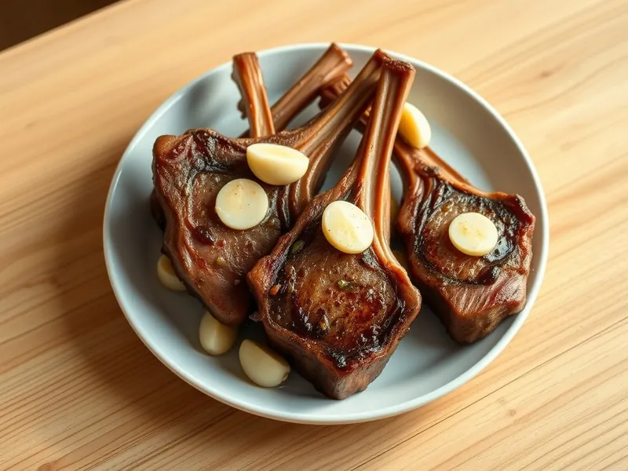

Каре ягнёнка на сковороде с чесноком
Бараньи рёбрышки-котлетки, обжаренные с чесноком и травами до розовой середины
25 мин2 порц.682 ккал на порциюБ 40 · Ж 57 · У 3Европейская кухня
Открыть в приложении: порции, таймеры, список покупок
Продукты на 2 порц.
- Баранина500 г
- Чеснок3 зуб.
- Сушёные травы1 ч. л.
- Сливочное масло20 г
- Оливковое масло1 ст. л.
- Соль0,7 ч. л.
- Перец чёрный молотый0,5 ч. л.
Как готовить
- Достаньте каре из холодильника заранее, если есть время. Разрежьте его на котлетки по одному рёбрышку, обсушите бумажным полотенцем.
- Натрите мясо солью, перцем и травами, 3 минуты.
- Раскалите оливковое масло на сильном огне. Выложите котлетки и жарьте по 3 минуты с каждой стороны до тёмно-золотистой корочки. Прижмите щипцами и обжарьте жировой край 1 минуту.
- Убавьте огонь до среднего, добавьте сливочное масло и раздавленный чеснок. Поливайте мясо пенящимся маслом ложкой 2 минуты.
- Переложите на тарелку и дайте отдохнуть 4 минуты под фольгой: внутри мясо останется розовым и сочным.
Совет. Не режьте котлетки сразу со сковороды: за 4 минуты отдыха сок распределяется внутри и не вытекает на тарелку.